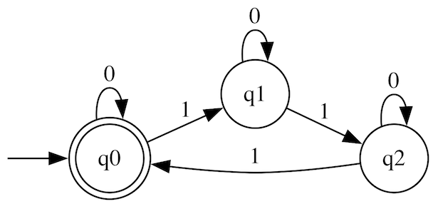
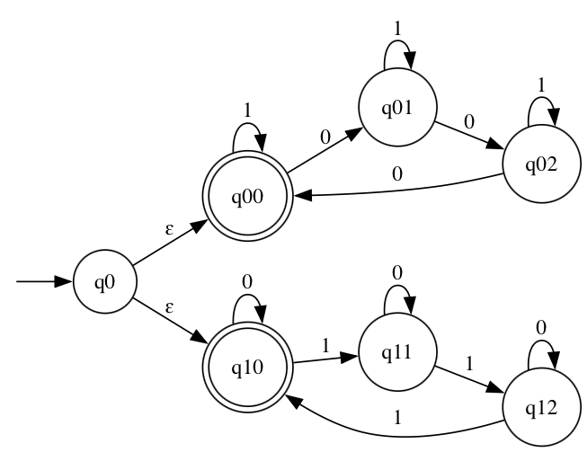

2. domača naloga#
V domači nalogi bomo preučevali končne avtomate, enostavne matematične modele računanja. Končni avtomati sicer ne morejo opisati vseh možnih izračunov, so pa zelo uporabni za prepoznavanje vzorcev v nizih.
Deterministični končni avtomati#
Deterministični končni avtomat (deterministic finite automaton oz. DFA) nad abecedo \(\Sigma\) je sestavljen iz množice stanj \(Q\) ter prehodne funkcije \(\delta : Q \times \Sigma \rightharpoonup Q\) med njimi. Avtomat začne v enem izmed možnih stanj \(q_0\), nato pa glede na trenutno stanje in trenutni simbol preide v neko novo stanje in od tam nadaljuje z naslednjim znakom. Če ob pregledu celotnega niza konča v enem od sprejemnih stanj \(F \subseteq Q\), je niz sprejet, sicer pa ni. Prehodna funkcija \(\delta\) je delno definirana. Če za trenutno stanje in simbol prehod ne obstaja, avtomat niz zavrne.
Za primer si oglejmo avtomat, ki sprejema nize, sestavljene iz ničel in enic, v katerih je število enic deljivo s tri. Tak avtomat predstavimo z naslednjim diagramom, na katerem je začetno stanje označeno s puščico, sprejemna stanja pa so dvojno obkrožena.

V tem avtomatu je abeceda \(\Sigma = \{ 0, 1\}\), potrebujemo pa tri stanja, za vsak ostanek enega, zato je \(Q = \{ q_0, q_1, q_2 \}\). Začetno stanje je \(q_0\), ki je hkrati tudi edino sprejemno stanje. Prehodna funkcija je definirana kot:
\(\delta\) |
\(0\) |
\(1\) |
|---|---|---|
\(q_0\) |
\(q_0\) |
\(q_1\) |
\(q_1\) |
\(q_1\) |
\(q_2\) |
\(q_2\) |
\(q_2\) |
\(q_0\) |
Če avtomat na primer prejme niz \(10011\), bo prehajal skozi stanja:
Začetno stanje: \(q_0\)
Prebere \(1\): prehod v \(q_1\)
Prebere \(0\): stanje ostane \(q_1\)
Prebere \(0\): stanje ostane \(q_1\)
Prebere \(1\): prehod v \(q_2\)
Prebere \(1\): prehod v \(q_0\)
Ker je stanje \(q_0\) sprejemno, avtomat niz sprejme.
Modul DFA#
Pri implementaciji se bomo omejili na avtomate, ki delujejo nad znaki angleške abecede, stanja pa bomo zaradi preglednosti predstavili kar z nizi. Take avtomate predstavimo s signaturo DFA_SIG:
module type DFA_SIG = sig
type stanje = string
type t
(* Funkcije za grajenje *)
(* Argument tipa [bool] pove, ali naj bo dodano stanje sprejemno *)
val ustvari : stanje -> bool -> t
val dodaj_stanje : stanje -> bool -> t -> t
val dodaj_prehod : stanje -> char -> stanje -> t -> t
(* Funkcije za poizvedovanje *)
val seznam_stanj : t -> stanje list
val zacetno_stanje : t -> stanje
val je_sprejemno_stanje : t -> stanje -> bool
val prehodna_funkcija : t -> stanje -> char -> stanje option
val seznam_prehodov : t -> (stanje * char * stanje) list
end
module type DFA_SIG =
sig
type stanje = string
type t
val ustvari : stanje -> bool -> t
val dodaj_stanje : stanje -> bool -> t -> t
val dodaj_prehod : stanje -> char -> stanje -> t -> t
val seznam_stanj : t -> stanje list
val zacetno_stanje : t -> stanje
val je_sprejemno_stanje : t -> stanje -> bool
val prehodna_funkcija : t -> stanje -> char -> stanje option
val seznam_prehodov : t -> (stanje * char * stanje) list
end
Napišite modul DFA, ki zadošča zgornji signaturi.
Primer zgornjega avtomata bi lahko zapisali kot:
let enke_deljive_s_3 = DFA.(
ustvari "q0" true
|> dodaj_stanje "q1" false
|> dodaj_stanje "q2" false
|> dodaj_prehod "q0" '0' "q0"
|> dodaj_prehod "q1" '0' "q1"
|> dodaj_prehod "q2" '0' "q2"
|> dodaj_prehod "q0" '1' "q1"
|> dodaj_prehod "q1" '1' "q2"
|> dodaj_prehod "q2" '1' "q0"
)
val enke_deljive_s_3 : DFA.t = <abstr>
Izpis avtomata#
Napišite funkcijo dot_of_dfa : DFA.t -> string, ki vrne zapis avtomata v formatu dot. Na ta način si lahko avtomat ogledate s programom GraphViz ali kar v spletnem pregledovalniku.
let () = enke_deljive_s_3 |> dot_of_dfa |> print_endline
digraph DFA {
rankdir=LR;
size="8,5"
node [shape = doublecircle]; q0;
node [shape = circle]; q1 q2;
"" [shape=none];
"" -> q0;
q2 -> q0 [label="1"];
q1 -> q2 [label="1"];
q0 -> q1 [label="1"];
q2 -> q2 [label="0"];
q1 -> q1 [label="0"];
q0 -> q0 [label="0"];
}
Sprejemanje niza#
Sestavite funkcijo dfa_sprejema : DFA.t -> string -> bool, ki preveri, ali avtomat sprejme podani niz.
let nizi =
let razsiri nizi = List.map ((^) "0") nizi @ List.map ((^) "1") nizi in
let razsiri_zadnjega =
function
| [] -> []
| (zadnji :: _) as vsi -> razsiri zadnji :: vsi
in
let rec loop n vsi =
if n = 0 then
vsi |> List.rev |> List.flatten
else
loop (n - 1) (razsiri_zadnjega vsi)
in
loop 5 [[""]]
val nizi : string list =
[""; "0"; "1"; "00"; "01"; "10"; "11"; "000"; "001"; "010"; "011"; "100";
"101"; "110"; "111"; "0000"; "0001"; "0010"; "0011"; "0100"; "0101";
"0110"; "0111"; "1000"; "1001"; "1010"; "1011"; "1100"; "1101"; "1110";
"1111"; "00000"; "00001"; "00010"; "00011"; "00100"; "00101"; "00110";
"00111"; "01000"; "01001"; "01010"; "01011"; "01100"; "01101"; "01110";
"01111"; "10000"; "10001"; "10010"; "10011"; "10100"; "10101"; "10110";
"10111"; "11000"; "11001"; "11010"; "11011"; "11100"; "11101"; "11110";
"11111"]
let primer_dfa = List.filter (dfa_sprejema enke_deljive_s_3) nizi
val primer_dfa : string list =
[""; "0"; "00"; "000"; "111"; "0000"; "0111"; "1011"; "1101"; "1110";
"00000"; "00111"; "01011"; "01101"; "01110"; "10011"; "10101"; "10110";
"11001"; "11010"; "11100"]
Nedeterministični končni avtomati#
Nedeterministični končni avtomati (nondeterministic finite automaton oz. NFA) se od determinističnih razlikujejo v dveh pogledih:
dopuščajo prazne prehode med stanji, torej prehode, ki se zgodijo brez branja simbola iz niza,
iz enega stanja lahko obstaja več prehodov za isti simbol.
Prehodno funkcijo \(\delta\) tako definiramo kot \(\delta : Q \times (\Sigma \cup \{ \varepsilon \}) \rightarrow \mathcal{P}(Q)\), kjer simbol \(\varepsilon\) predstavlja prazen prehod, \(\mathcal{P}(Q)\) pa je potenčna množica množice stanj \(Q\). Vsak deterministični končni avtomat je tudi nedeterminističen končni avtomat, velja pa tudi obratno. Za vsak nedeterministični končni avtomat lahko ustvarimo ustrezen deterministični končni avtomat, ki sprejema iste nize (namig: za stanja ustreznega DFA vzamemo podmnožice stanj NFA).
Avtomat sprejme niz, če obstaja pot, ki ji sledimo po prehodih z zaporednimi znaki niza ali praznih prehodih, tako da začnemo v začetnem stanju in končamo v enem od sprejemnih stanj.
Na primer, vzemimo avtomat, ki sprejema nize, sestavljene iz ničel in enic, v katerih je ali število enic ali število ničel deljivo s 3. Tak avtomat je sestavljen iz začetnega stanja, s praznim prehodom v eno kopijo prejšnjega avtomata ter še enim praznim prehodom v drugo kopijo, v kateri zamenjamo vlogi znakov.

Kot pri primeru za deterministični avtomat je avtomat definiran nad abecedo \(\Sigma = \{ 0, 1\}\), stanj je tokrat sedem, poleg začetnega še po tri v vsaki kopiji avtomata iz prvega primera. Tako je \(Q = \{ q_0, q_{00}, q_{01}, q_{02}, q_{10}, q_{11}, q_{12} \}\). Začetno stanje je \(q_0\), sprejemni pa sta \(q_{00}\) in \(q_{10}\). Prehodna funkcija je definirana kot:
\(\delta\) |
|
|
\(\varepsilon\) |
|---|---|---|---|
\(q_0\) |
\(\emptyset\) |
\(\emptyset\) |
\(\{q_{00}\}\) |
\(q_0\) |
\(\emptyset\) |
\(\emptyset\) |
\(\{q_{10}\}\) |
\(q_{00}\) |
\(\{q_{01}\}\) |
\(\{q_{00}\}\) |
\(\emptyset\) |
\(q_{01}\) |
\(\{q_{02}\}\) |
\(\{q_{01}\}\) |
\(\emptyset\) |
\(q_{02}\) |
\(\{q_{00}\}\) |
\(\{q_{02}\}\) |
\(\emptyset\) |
\(q_{10}\) |
\(\{q_{10}\}\) |
\(\{q_{11}\}\) |
\(\emptyset\) |
\(q_{11}\) |
\(\{q_{11}\}\) |
\(\{q_{12}\}\) |
\(\emptyset\) |
\(q_{12}\) |
\(\{q_{12}\}\) |
\(\{q_{10}\}\) |
\(\emptyset\) |
Če avtomat prejme niz 10011, bo prehajal skozi stanja:
Začetno stanje: \(q_0\)
Pred branjem znaka
1se lahko po praznih prehodih premakne v stanji \(q_{00}\) in \(q_{10}\), tako da so njegova možna stanja \(\{q_0, q_{00}, q_{10}\}\)Prebere
1: vsa tri možna stanja se premaknejo, če se lahko (stanje \(q_0\) nima možnega premika), tako so možna stanja \(\{q_{01}, q_{10}\}\)Pred branjem novega znaka se zopet lahko vsa možna stanja premaknejo po praznih prehodih, a ker teh ni, ostaneta možni stanji \(\{q_{01}, q_{10}\}\)
Prebere
0: po prehodih so možna stanja \(\{q_{01}, q_{11}\}\)Prazni premiki in branje
0: možna stanja \(\{q_{02}, q_{11}\}\)Prazni premiki in branje
1: možna stanja \(\{q_{02}, q_{12}\}\)Prazni premiki in branje
1: možna stanja \(\{q_{02}, q_{10}\}\)Prazni premiki: možna stanja ostanejo \(\{q_{02}, q_{10}\}\)
Ker je stanje \(q_{10}\) sprejemno, avtomat niz sprejme.
Modul NFA#
Nedeterministične avtomate predstavimo s signaturo NFA_SIG, podobno zgornji:
module type NFA_SIG = sig
type stanje = string
type t
(* Funkcije za grajenje *)
val ustvari : stanje -> bool -> t
val dodaj_stanje : stanje -> bool -> t -> t
val dodaj_prehod : stanje -> char -> stanje -> t -> t
val dodaj_prazen_prehod : stanje -> stanje -> t -> t
(* Funkcije za poizvedovanje *)
val seznam_stanj : t -> stanje list
val zacetno_stanje : t -> stanje
val je_sprejemno_stanje : t -> stanje -> bool
val prehodna_funkcija : t -> stanje -> char option -> stanje list
val seznam_prehodov : t -> (stanje * char option * stanje) list
end
module type NFA_SIG =
sig
type stanje = string
type t
val ustvari : stanje -> bool -> t
val dodaj_stanje : stanje -> bool -> t -> t
val dodaj_prehod : stanje -> char -> stanje -> t -> t
val dodaj_prazen_prehod : stanje -> stanje -> t -> t
val seznam_stanj : t -> stanje list
val zacetno_stanje : t -> stanje
val je_sprejemno_stanje : t -> stanje -> bool
val prehodna_funkcija : t -> stanje -> char option -> stanje list
val seznam_prehodov : t -> (stanje * char option * stanje) list
end
Napišite modul NFA, ki zadošča zgornji signaturi.
Primer zgornjega avtomata bi lahko zapisali kot:
let enke_ali_nicle_deljive_s_3 = NFA.(
ustvari "q0" false
|> dodaj_stanje "q00" true
|> dodaj_stanje "q01" false
|> dodaj_stanje "q02" false
|> dodaj_prehod "q00" '0' "q01"
|> dodaj_prehod "q01" '0' "q02"
|> dodaj_prehod "q02" '0' "q00"
|> dodaj_prehod "q00" '1' "q00"
|> dodaj_prehod "q01" '1' "q01"
|> dodaj_prehod "q02" '1' "q02"
|> dodaj_stanje "q10" true
|> dodaj_stanje "q11" false
|> dodaj_stanje "q12" false
|> dodaj_prehod "q10" '1' "q11"
|> dodaj_prehod "q11" '1' "q12"
|> dodaj_prehod "q12" '1' "q10"
|> dodaj_prehod "q10" '0' "q10"
|> dodaj_prehod "q11" '0' "q11"
|> dodaj_prehod "q12" '0' "q12"
|> dodaj_prazen_prehod "q0" "q00"
|> dodaj_prazen_prehod "q0" "q10"
)
val enke_ali_nicle_deljive_s_3 : NFA.t = <abstr>
Izpis avtomata#
Napišite funkcijo dot_of_nfa : NFA.t -> string, ki vrne zapis avtomata v formatu dot.
let () = enke_ali_nicle_deljive_s_3 |> dot_of_nfa |> print_endline
digraph NFA {
rankdir=LR;
size="8,5"
node [shape = doublecircle]; q00 q10;
node [shape = circle]; q0 q01 q02 q11 q12;
"" [shape=none];
"" -> q0;
q0 -> q10 [label="ɛ"];
q0 -> q00 [label="ɛ"];
q12 -> q12 [label="0"];
q11 -> q11 [label="0"];
q10 -> q10 [label="0"];
q12 -> q10 [label="1"];
q11 -> q12 [label="1"];
q10 -> q11 [label="1"];
q02 -> q02 [label="1"];
q01 -> q01 [label="1"];
q00 -> q00 [label="1"];
q02 -> q00 [label="0"];
q01 -> q02 [label="0"];
q00 -> q01 [label="0"];
}
Sprejemanje niza#
Sestavite funkcijo nfa_sprejema : NFA.t -> string -> bool, ki preveri, ali avtomat sprejme podani niz.
let primer_nfa = List.filter (nfa_sprejema enke_ali_nicle_deljive_s_3) nizi
val primer_nfa : string list =
[""; "0"; "1"; "00"; "11"; "000"; "111"; "0000"; "0001"; "0010"; "0100";
"0111"; "1000"; "1011"; "1101"; "1110"; "1111"; "00000"; "00011"; "00101";
"00110"; "00111"; "01001"; "01010"; "01011"; "01100"; "01101"; "01110";
"10001"; "10010"; "10011"; "10100"; "10101"; "10110"; "11000"; "11001";
"11010"; "11100"; "11111"]
Regularni izrazi#
Regularni izrazi so formalni opisi jezikov (množic nizov) nad abecedo \(\Sigma\). Uporabljajo se za kompaktno opisovanje vzorcev, ki jim morajo nizi ustrezati. Rečemo, da niz ustreza regularnemu izrazu, če ga lahko zgradimo z upoštevanjem pravil, ki jih določa ta izraz.
Regularni izrazi so sestavljeni iz osnovnih elementov in operacij:
\(\emptyset\) ne ustreza nobenemu jeziku,
\(\varepsilon\) ustreza prazen niz,
za vsak znak \(a \in \Sigma\), izrazu \(a\) ustreza natanko natanko niz dolžine 1, sestavljenem le iz znaka \(a\),
uniji \(r_1 \mid r_2\) ustreza vsem nizom, ki ustrezajo \(r_1\) ali \(r_2\),
stiku \(r_1 r_2\) ustrezajo vsi nizi oblike \(s_1 s_2\), kjer \(s_1\) ustreza \(r_1\) ter \(s_2\) ustreza \(r_2\),
Kleenejevemu zaprtju \(r^*\) ustrezajo vsi nizi oblike \(s_1 s_2 \cdots s_n\) za nek \(n\) (vključno s praznim nizom), kjer vsak izmed nizov \(s_i\) ustreza \(r\).
Za primer si oglejmo regularni izraz \(a^* b\). Ta izraz je sestavljen kot stik izrazov \(a^*\) in \(b\) in tako sprejme vse nize, ki se začnejo s poljubnim številom ponovitev (lahko nič) znaka \(a\) in končajo z znakom \(b\). Izrazu tako ustreza niz \(aaab\), niz \(aaabb\) pa ne. Nize, v katerih je število enk deljivo s tri, bi lahko opisali z regularnim izrazom \(0^*( 10^*10^*10^* )^*\).
Regularne izraze bomo implementirali z algebrajskim tipom, ki ima za konstruktorje zgoraj naštete osnovne elemente in operacije na regularnih izrazih.
type regex =
| Empty
| Eps
| Char of char
| Union of regex * regex
| Concat of regex * regex
| Star of regex
type regex =
Empty
| Eps
| Char of char
| Union of regex * regex
| Concat of regex * regex
| Star of regex
let re_enke_deljive_s_3 =
let poljubno_nicel = Star (Char '0') in
let enka_in_poljubno_nicel = Concat (Char '1', poljubno_nicel) in
Concat (poljubno_nicel, Star (Concat (Concat (enka_in_poljubno_nicel, enka_in_poljubno_nicel), enka_in_poljubno_nicel)))
val re_enke_deljive_s_3 : regex =
Concat (Star (Char '0'),
Star
(Concat
(Concat (Concat (Char '1', Star (Char '0')),
Concat (Char '1', Star (Char '0'))),
Concat (Char '1', Star (Char '0')))))
Izpisovanje#
Napišite funkcijo string_of_regex : Regex.t -> string, ki regularni izraz predstavi z nizom. Pri tem poskusite zapisati čim manj oklepajev, upoštevaje to, da ima Kleenejevo zaprtje najvišjo prioriteto, sledi stik, nato pa unija. Poleg tega sta stik in unija asociativni operaciji.
let primer_regex_1 = string_of_regex re_enke_deljive_s_3
val primer_regex_1 : string = "0*(10*10*10*)*"
Sprejeti nizi#
Napišite funkcijo regex_sprejema: regex -> string -> bool, ki preveri, ali dan niz ustreza regularnemu izrazu.
let primer_regex_2 = regex_sprejema re_enke_deljive_s_3 "10011"
val primer_regex_2 : bool = true
let primer_regex_3 = regex_sprejema re_enke_deljive_s_3 "100111"
val primer_regex_3 : bool = false
Od regularnega izraza do avtomata#
Izkaže se, da med regularnimi izrazi in nedeterminističnimi končnimi avtomati obstaja ekvivalenca. Za vsak izraz obstaja ustrezen avtomat, ki sprejema iste nize in obratno. Mi bomo ekvivalenco pokazali le v eno stran tako, da bomo za vsak konstruktor regularnih izrazov definirali ustrezno konstrukcijo na končnih avtomatih.
Definirajte avtomat prazen_nfa: NFA.t, ki ne sprejme nobenega niza.
let primer_regex_4 = List.filter (nfa_sprejema prazen_nfa) nizi
val primer_regex_4 : string list = []
Definirajte avtomat epsilon_nfa: NFA.t, ki sprejme natanko prazen niz.
let primer_regex_5 = List.filter (nfa_sprejema epsilon_nfa) nizi
val primer_regex_5 : string list = [""]
Definirajte funkcijo znak_nfa: char -> NFA.t, ki vrne avtomat, ki sprejme natanko niz dolžine ena z znakom v argumentu.
let primer_regex_6 = List.filter (nfa_sprejema (znak_nfa '0')) nizi
val primer_regex_6 : string list = ["0"]
Definirajte funkcijo unija_nfa: NFA.t -> NFA.t -> NFA.t, ki vrne avtomat, ki sprejme nize sprejete s katerim koli izmed avtomatov v argumentih.
let primer_regex_7 = List.filter (nfa_sprejema (unija_nfa epsilon_nfa (znak_nfa '0'))) nizi
val primer_regex_7 : string list = [""; "0"]
Definirajte funkcijo stik_nfa: NFA.t -> NFA.t -> NFA.t. Vrnjeni avtomat sprejme nize sestavljene iz stika prvega dela, ki ga sprejme avtomat v prvem argumentu, in drugega dela, ki ga sprejme avtomat v drugem argumentu.
let primer_regex_8 = List.filter (nfa_sprejema (stik_nfa (znak_nfa '0') (znak_nfa '1'))) nizi
val primer_regex_8 : string list = ["01"]
Definirajte funkcijo kleenejevo_zaprtje_nfa: NFA.t -> NFA.t. Vrnjeni avtomat naj sprejme nize, ki jih dobimo s poljubnim ponavljanjem nizov, ki jih sprejme avtomat v argumentu.
let primer_regex_9 = List.filter (nfa_sprejema (kleenejevo_zaprtje_nfa (znak_nfa '0'))) nizi
val primer_regex_9 : string list = [""; "0"; "00"; "000"; "0000"; "00000"]
Zgoraj definirane funkcije združite v definicijo funkcijo nfa_of_regex: regex -> NFA.t, ki danemu regularnemu izrazu priredi NFA, ki sprejme isti jezik.
let primer_regex_10 = List.filter (nfa_sprejema (nfa_of_regex re_enke_deljive_s_3)) nizi
val primer_regex_10 : string list =
[""; "0"; "00"; "000"; "111"; "0000"; "0111"; "1011"; "1101"; "1110";
"00000"; "00111"; "01011"; "01101"; "01110"; "10011"; "10101"; "10110";
"11001"; "11010"; "11100"]
let primer_regex_11 = List.filter (regex_sprejema re_enke_deljive_s_3) nizi
val primer_regex_11 : string list =
[""; "0"; "00"; "000"; "111"; "0000"; "0111"; "1011"; "1101"; "1110";
"00000"; "00111"; "01011"; "01101"; "01110"; "10011"; "10101"; "10110";
"11001"; "11010"; "11100"]